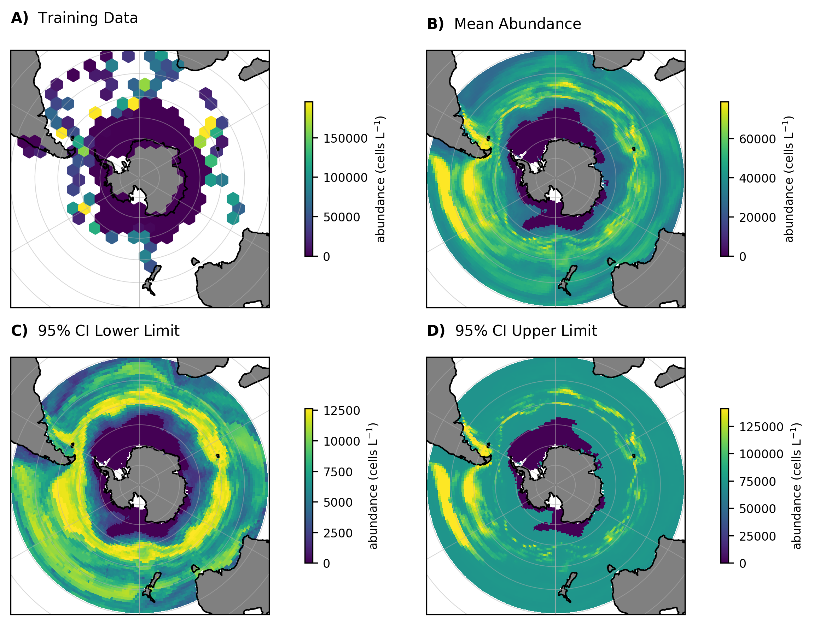

Southern Ocean distribution of Gephyrocapsa huxleyi#
In this example we will use Abil to predict the biomass of a highly abundant calcifying nanoplankton (Gephyrocapsa huxleyi). We will focus on the Southern Ocean, a region with high G. huxleyi stocks and of significant importance to the ocean carbon cycle. This region has an interesting macroscale distribution of G. huxleyi biomass, with peak concentrations in the so called “great calcite belt” between ~40-60°S but a notable absence below ~60°S due to competition with silicifying nanoplankton [1].
For this example we will use a 2-phase regressor to better constrain absences below ~60°S. For an example of the 1-phase model see Coccolithophore abundance in the Bermuda Atlantic Time Series.
YAML example#
Before running the model, model specifications need to be defined in a YAML file. For a detailed explanation of each parameter see Model YAML Configuration.
An example of YAML file of a 2-phase model is provided below. Note that compared to a 1-phase regressor model, the hyper-parameters for the classifier also need to be specified.
---
root: ./
run_name: 2-phase #update for specific run name
path_out: ModelOutput/ #root + folder
prediction: data/so_prediction.csv #root + folder
targets: data/targets.csv #root + folder
training: data/so_training.csv
predictors: ["temperature",
"sio4", "po4", "no3",
"o2", "DIC", "TA"]
verbose: 1 # scikit-learn warning verbosity
seed : 1 # random seed
n_threads : 14 # how many cpu threads to use
cv : 5 # number of cross folds
ensemble_config:
classifier: True
regressor: True
m1: "rf"
m2: "knn"
m3: "xgb"
upsample: False
stratify: True
param_grid:
rf_param_grid:
reg_param_grid:
n_estimators: [100]
max_features: [0.2, 0.4, 0.8]
max_depth: [50]
min_samples_leaf: [0.5]
max_samples: [0.5]
clf_param_grid:
n_estimators: [100]
max_features: [8]
max_depth: [2]
min_samples_leaf: [1]
max_samples: [0.6]
xgb_param_grid:
reg_param_grid:
learning_rate: [0.05]
n_estimators: [100]
max_depth: [7]
subsample: [0.8]
colsample_bytree: [0.5]
gamma: [1]
reg_alpha: [0.1]
clf_param_grid:
learning_rate: [0.1]
n_estimators: [100]
max_depth: [2]
subsample: [ 0.6]
colsample_bytree: [0.8]
gamma: [0]
reg_alpha: [0]
knn_param_grid:
reg_param_grid:
max_samples: [0.85]
max_features: [0.85]
estimator__leaf_size: [5]
estimator__n_neighbors: [5]
estimator__p: [1]
estimator__weights: ["uniform"]
clf_param_grid:
max_samples: [0.85]
max_features: [0.9]
estimator__n_neighbors: [3]
estimator__p: [1]
estimator__weights: ["distance"]
knn_bagging_estimators: 30
Running the model#
After specifying the model configuration in the relevant YAML file, we can use the Abil API to 1) tune the model, evaluating the model performance across different hyper-parameter values and then selecting the best configuration 2) predict in-sample and out-of-sample observations based on the optimal hyper-parameter configuration identified in the first step 3) conduct post-processing such as exporting relevant performance metrics, spatially or temporally integrated target estimates, and diversity metrics.
Loading dependencies#
Before running the Python script we need to import all relevant Python packages. For instructions on how to install these packages, see requirements.txt and the Abil Installation.
#paths:
import os
#handling data:
import numpy as np
import pandas as pd
import xarray as xr
from yaml import load
from yaml import CLoader as Loader
#abil functions:
from abil.tune import ModelTuner as tune
from abil.predict import ModelPredictor as predict
from abil.post import AbilPostProcessor as post
from abil.utils import example_data
#plotting:
import matplotlib.pyplot as plt
import cartopy.crs as ccrs
import cartopy.feature as cfeature
from matplotlib.colors import Normalize
Loading the configuration YAML#
After loading the required packages we need to define our file paths.
os.chdir(os.path.join(".", "examples"))
Loading example data#
Next we load our Southern Ocean example data which was extracted from the CASCADE database [2] and then averaged with depth and time. When applying the pipeline to your own data, note that the data needs to be in a Pandas DataFrame format.
In addition to our predictors (y_train) we also need environmental data which match our predictions (‘X_train’). This data was obtained from monthly climatologies from data sources such as the World Ocean Atlas [3], NNGv2 [4][5].
#load example training data:
d = pd.read_csv(os.path.join("data", "so_training.csv"))
#define target:
target = "Gephyrocapsa huxleyi HET"
#define predictors based on YAML:
predictors = model_config['predictors']
#split training data in X_train and y
y = d[target]
X_train = d[predictors]
Training the model#
Next we train our model. Note that depending on the number of hyper-parameters specified in the YAML file this can be computationally very expensive and it recommended to do this on a HPC system.
#train your model:
m = tune(X_train, y, model_config)
m.train(model="rf")
m.train(model="xgb")
m.train(model="knn")
Making predictions#
After training our model we can make predictions on a new dataset (X_predict):
#load prediction data:
X_predict = pd.read_csv(os.path.join("data", "so_prediction.csv"))
X_predict.set_index(['lat', 'lon'], inplace=True)
X_predict = X_predict[predictors]
#predict your model:
m = predict(X_train, y, X_predict, model_config)
m.make_prediction()
Post-processing#
Finally, we conduct the post-processing.
targets = np.array([target])
def do_post(statistic):
m = post(X_train, y, X_predict, model_config, statistic, datatype="abundance")
m.export_ds("SO") #Southern Ocean
do_post(statistic="mean")
do_post(statistic="ci95_UL")
do_post(statistic="ci95_LL")
Plotting#
Now that we have predictions we can plot them:
# Load the predictions
ds = xr.open_dataset(os.path.join("ModelOutput", "2-phase", "posts", "SO_mean_abundance.nc"))
ds_LL = xr.open_dataset(os.path.join("ModelOutput", "2-phase", "posts", "SO_ci95_LL_abundance.nc"))
ds_UL = xr.open_dataset(os.path.join("ModelOutput", "2-phase", "posts", "SO_ci95_UL_abundance.nc"))
# Create the figure
def plot_panel(ax, data, var, title, label,
cbar_label='abundance (cells L$^{-1}$)'):
ax.set_extent([-180,180,-90,-30], crs=ccrs.PlateCarree())
ax.coastlines(); ax.gridlines(draw_labels=False, linewidth=0.5, alpha=0.5)
ax.add_feature(cfeature.LAND, color='gray')
ax.add_feature(cfeature.COASTLINE, linewidth=0.5)
ax.set_title(f'$\mathbf{{{label}}}$ {title}', loc='left',
pad=10, y=1.05, fontsize=10)
if isinstance(data, pd.DataFrame): # raw points
lon, lat = np.asarray(data['lon']), np.asarray(data['lat'])
vals = np.asarray(data[var])
# clip outliers for plotting
vmin, vmax = np.nanpercentile(vals, [2,98])
x, y = ax.projection.transform_points(ccrs.PlateCarree(), lon, lat)[:,0:2].T
h = ax.hexbin(x, y, C=vals, reduce_C_function=np.nanmean, gridsize=20,
mincnt=1, norm=Normalize(vmin=vmin, vmax=vmax))
else: # gridded data
da = data[var] if isinstance(data, xr.Dataset) else data
h = da.plot(ax=ax, add_colorbar=False, robust=True,
transform=ccrs.PlateCarree())
cb = plt.colorbar(h, ax=ax, shrink=0.6, pad=0.1); cb.ax.tick_params(labelsize=8)
cb.set_label(cbar_label, size=8)
# apply plotting function and export
fig, axs = plt.subplots(2,2, figsize=(8,6),
subplot_kw={'projection': ccrs.SouthPolarStereo()})
(ax00, ax01), (ax10, ax11) = axs
plot_panel(ax00, d, target, 'Training Data', 'A)')
plot_panel(ax01, ds, target, 'Mean Abundance', 'B)')
plot_panel(ax10, ds_LL, target, '95% CI Lower Limit', 'C)')
plot_panel(ax11, ds_UL, target, '95% CI Upper Limit', 'D)')
plt.tight_layout()
plt.savefig('SO_predictions.png', dpi=300, bbox_inches='tight', facecolor='white')
plt.show()

Integrated inorganic carbon stock#
With abil.post can also estimate integrated inorganic carbon stock. First we convert our abundances to cellular inorganic carbon, and then integrate accounting for grid volumes and unit conversions.
# we can also look at integrated totals (stocks)
def do_integrations(statistic):
m = post(X_train, y, X_predict, model_config, statistic, datatype="pic")
m.estimate_carbon("pg pic")
vol_conversion = 1e3 # to convert from pg C L-1 to pg C m-3
magnitude_conversion = 1e-24 # convert from pg C to Tg C
vol_conversion = vol_conversion*200 # model approximates the top 200m
integ = m.integration(m, vol_conversion=vol_conversion,
magnitude_conversion=magnitude_conversion)
integ.integrated_totals(targets)
do_integrations(statistic="mean")
do_integrations(statistic="ci95_UL")
do_integrations(statistic="ci95_LL")
Checking the output:
mean = pd.read_csv(os.path.join("ModelOutput", "2-phase", "posts",
"integrated_totals",
"ens_integrated_totals_mean_pic.csv"))['total'][0]
ci95_LL = pd.read_csv(os.path.join("ModelOutput", "2-phase", "posts",
"integrated_totals",
"ens_integrated_totals_ci95_LL_pic.csv"))['total'][0]
ci95_UL = pd.read_csv(os.path.join("ModelOutput", "2-phase", "posts",
"integrated_totals",
"ens_integrated_totals_ci95_UL_pic.csv"))['total'][0]
>>> print(f"estimated integrated total: {mean:.2f} [{ci95_LL:.2f}, {ci95_UL:.2f}] Tg IC")
estimated integrated total: 4.00 [0.69, 7.31] Tg IC
The resulting number is OK on a first order basis, but rather high, likely due to our example not accounting for the strong seasonal variation in biomass observed in this region.